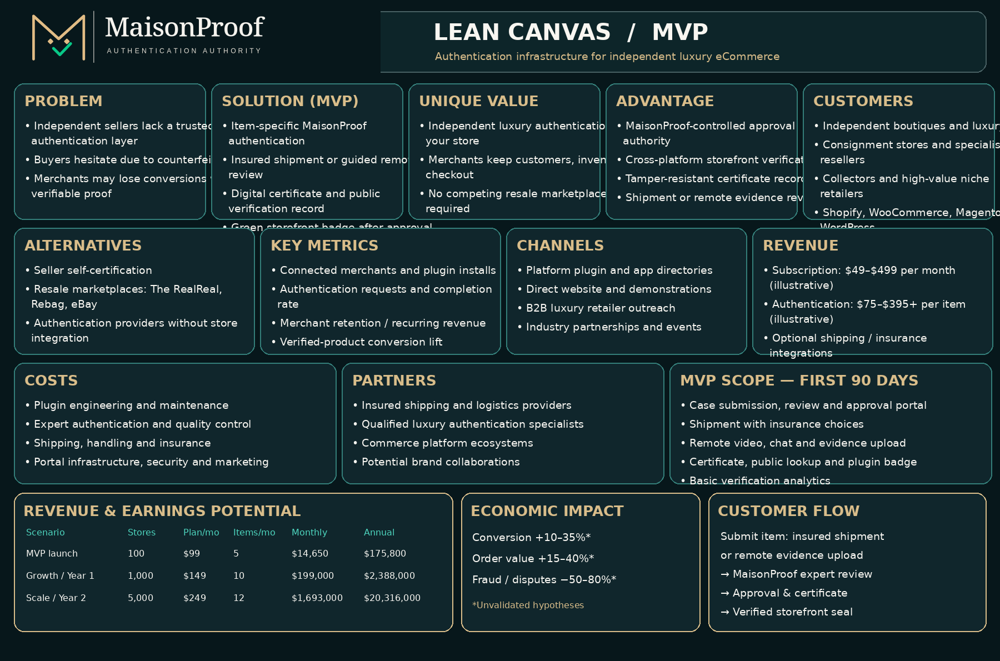
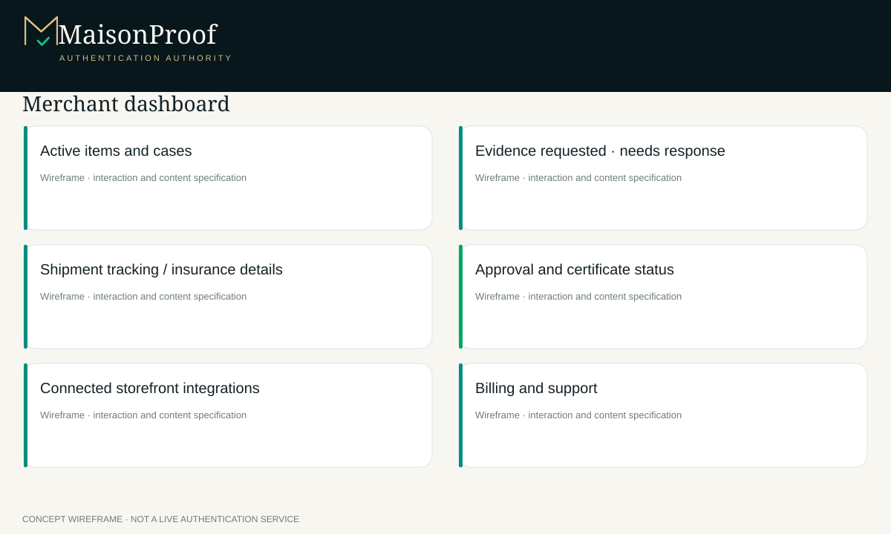

Storefront & verification experience
Magento storefront concept, verified item seal, insured shipment and remote authentication routes.
MaisonProof is a proposed item-level authentication service for merchants selling luxury goods through their own Shopify, WooCommerce and Magento stores. An approved item earns a live, MaisonProof-controlled verification record and storefront seal.
Concept and development prototype · Not a live authentication serviceTwo original visual references, preserved without alteration, illustrate the intended customer experience and business model.
Magento storefront concept, verified item seal, insured shipment and remote authentication routes.

Business model, customer segments, subscription and review-fee hypotheses, and illustrative impact scenarios.
Images are illustrative. Product authentication, brand relationships, insurance options and domain ownership are not established. Financial scenarios and claimed conversion or fraud improvements in the business graphic are unvalidated hypotheses, not forecasts.
Merchants choose the appropriate evidence route. Neither route independently grants a green badge: MaisonProof must approve the exact item.
Secure intake, shipping and approved insurance options, carrier tracking, chain of custody, condition capture, expert physical inspection, and return logistics. Availability and coverage depend on future integrations and terms.
Shipping & insurance requirements →Existing certificates, photos and provenance evidence enter a case portal. Reviewers can request video, recordings with consent, chat, close-ups, and additional correspondence; inconclusive cases can escalate to physical inspection.
Case workflow →Submit item and select route
Collect and validate evidence
Qualified MaisonProof review
Item-specific approval record
Live storefront badge and public lookup
Only current approved records activate the green checkmark. Pending, rejected, disputed, expired or revoked records must not show an authenticated badge.
Editable SVGs can be imported into Figma. These are design handoff assets, not a native Figma file or completed application.

Catalog, status, and approved-item badges

Route selection between shipment and guided remote evidence

Shipment case intake, insurance options, custody requirements

Remote document, video, chat, and follow-up evidence

Reviewer queue and approval workflow

Public item-specific approval, evidence summary, and status

Merchant case status and catalog integrations

Review operations, disputes, and oversight

Responsive product authentication badge

Merchant analytics and conversion measurement
Illustrative two-week sprint cadence, with explicit acceptance and governance gates. Dates and resourcing require approval.
| Sprint | Theme | Deliverable | Exit gate |
|---|---|---|---|
| 0 | Discovery / kickoff | charter, stakeholders, baseline, brand audit | sponsor approval |
| 1 | Research / UX | interviews, journeys, Figma-ready wireframes | usability review |
| 2 | Trust policy / identity | authentication SOP, merchant roles | legal/trust approval |
| 3 | Case engine | states, audit, secure intake | threat model |
| 4 | Remote evidence | uploads, consent, media, chat | privacy QA |
| 5 | Reviewer console | evidence queue, requests, decision draft | reviewer dry run |
| 6 | Shipment workflow | quotes, insurance disclosures, custody | partner sandbox |
| 7 | Certificates | signer, expiry, dispute/revocation | adversarial tests |
| 8 | WooCommerce + public lookup | live badge, fail-closed status | UAT signoff |
| 9 | Shopify | theme/app adapter, app compliance | sandbox pass |
| 10 | Magento + billing | module, subscriptions, per-case fees | integration pass |
| 11 | Pilot | limited merchants, support, telemetry | quality thresholds |
| 12 | Hardening + launch decision | DR, accessibility, pen test, runbooks | go/no-go |
Requirements, operations, governance, engineering, quality, business planning and research artifacts are linked directly to the repository.